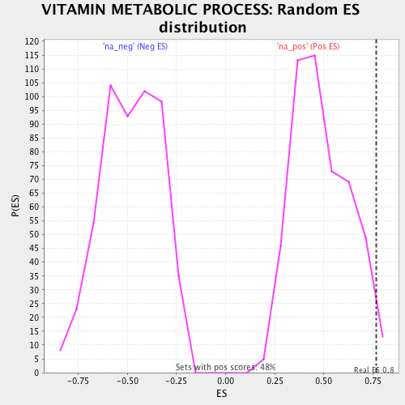

| | | Dataset | ranked_by_GEF.rnk |
| Phenotype | NoPhenotypeAvailable |
| Upregulated in class | na_pos |
| GeneSet | VITAMIN METABOLIC PROCESS |
| Enrichment Score (ES) | 0.76888365 |
| Normalized Enrichment Score (NES) | 1.577702 |
| Nominal p-value | 0.016563147 |
| FDR q-value | 0.39066923 |
| FWER p-Value | 0.815 |
Table: GSEA Results Summary
 Fig 1: Enrichment plot: VITAMIN METABOLIC PROCESS
Fig 1: Enrichment plot: VITAMIN METABOLIC PROCESS
Profile of the Running ES Score & Positions of GeneSet Members on the Rank Ordered List
| PROBE | GENE SYMBOL | GENE_TITLE | RANK IN GENE LIST | RANK METRIC SCORE | RUNNING ES | CORE ENRICHMENT | | 1 | THI3 | | | 43 | 0.316 | 0.3390 | Yes |
| 2 | SPE4 | | | 141 | 0.238 | 0.5473 | Yes |
| 3 | THI6 | | | 179 | 0.212 | 0.7689 | Yes |
| 4 | PET18 | | | 554 | 0.043 | 0.5469 | No |
| 5 | SPE3 | | | 560 | 0.043 | 0.5942 | No |
Table: GSEA details [plain text format]

Fig 2: VITAMIN METABOLIC PROCESS: Random ES distribution
Gene set null distribution of ES for VITAMIN METABOLIC PROCESS